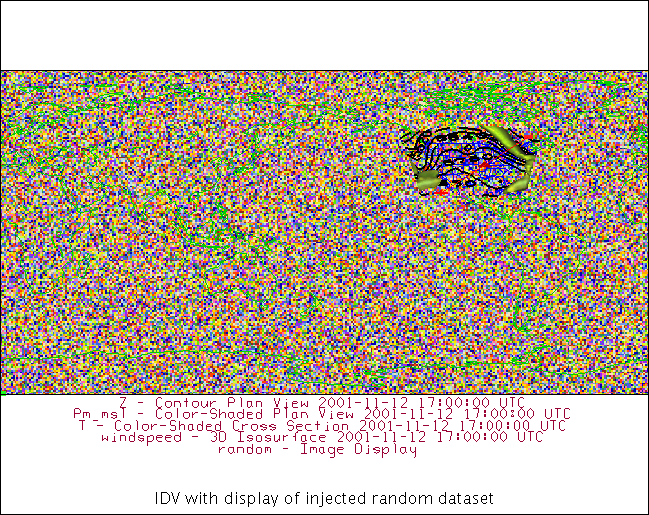

Click here to launch an
interactive online version of this notebook:
Examples: Loading data from python into IDV¶
1. A random array, created from scratch¶
2. xarray open a 2D field, send .to_IDV()¶
3. Compute 2D vertical integral from 3D (value added)¶
[8]:
%load_ext ipython_IDV
%load_bundle http://weather.rsmas.miami.edu/repository/entry/get/AnnualCycleGlobeMonthly.xidv?entryid=e3880649-f98a-4126-a437-509bce201d16
[2]:
import numpy as np
import xarray as xr
Example 1: Load a random array into IDV¶
[4]:
#create a random data and make a xarray dataarray
data=np.random.random((180,360))
data_xr=xr.DataArray(data,dims=['lat','lon'],coords={'lat':range(-90,90),'lon':range(0,360)},name='random')
[5]:
data_xr
[5]:
<xarray.DataArray 'random' (lat: 180, lon: 360)>
array([[0.670093, 0.784377, 0.409137, ..., 0.726175, 0.466415, 0.173591],
[0.29685 , 0.557347, 0.890125, ..., 0.022452, 0.130703, 0.087429],
[0.097889, 0.178755, 0.834005, ..., 0.934752, 0.901992, 0.949533],
...,
[0.770955, 0.309456, 0.414089, ..., 0.270197, 0.195103, 0.559949],
[0.857394, 0.1685 , 0.959192, ..., 0.563705, 0.27302 , 0.550274],
[0.653033, 0.152847, 0.378471, ..., 0.593272, 0.78419 , 0.521551]])
Coordinates:
* lat (lat) int64 -90 -89 -88 -87 -86 -85 -84 -83 -82 -81 -80 -79 -78 ...
* lon (lon) int64 0 1 2 3 4 5 6 7 8 9 10 11 12 13 14 15 16 17 18 19 ...
[6]:
data_xr.to_IDV() # this data now is located in your datasources of IDV
data loaded
Now go to IDV Dashboard, Field Selector tab, and make a display¶
[10]:
%make_image -caption 'IDV with display of injected random dataset'

Example 2¶
Open 2D dataset in xarrray, load the data into IDV¶
[17]:
# Open NCEP monthly climatology of column water vapor
da_2dPW=xr.open_dataset('https://www.esrl.noaa.gov/psd/thredds/dodsC/Datasets/ncep.reanalysis.derived/surface/pr_wtr.mon.ltm.nc')
# decode_times=False)
---------------------------------------------------------------------------
OSError Traceback (most recent call last)
<ipython-input-17-930a7d1a2285> in <module>()
1 # Open NCEP monthly climatology of column water vapor
----> 2 da_2dPW=xr.open_dataset('https://www.esrl.noaa.gov/psd/thredds/dodsC/Datasets/ncep.reanalysis.derived/surface/pr_wtr.mon.ltm.nc')
3 # decode_times=False)
//anaconda/envs/DRILSDOWN/lib/python3.6/site-packages/xarray/backends/api.py in open_dataset(filename_or_obj, group, decode_cf, mask_and_scale, decode_times, autoclose, concat_characters, decode_coords, engine, chunks, lock, cache, drop_variables, backend_kwargs)
318 group=group,
319 autoclose=autoclose,
--> 320 **backend_kwargs)
321 elif engine == 'scipy':
322 store = backends.ScipyDataStore(filename_or_obj,
//anaconda/envs/DRILSDOWN/lib/python3.6/site-packages/xarray/backends/netCDF4_.py in open(cls, filename, mode, format, group, writer, clobber, diskless, persist, autoclose, lock)
330 diskless=diskless, persist=persist,
331 format=format)
--> 332 ds = opener()
333 return cls(ds, mode=mode, writer=writer, opener=opener,
334 autoclose=autoclose, lock=lock)
//anaconda/envs/DRILSDOWN/lib/python3.6/site-packages/xarray/backends/netCDF4_.py in _open_netcdf4_group(filename, mode, group, **kwargs)
229 import netCDF4 as nc4
230
--> 231 ds = nc4.Dataset(filename, mode=mode, **kwargs)
232
233 with close_on_error(ds):
netCDF4/_netCDF4.pyx in netCDF4._netCDF4.Dataset.__init__()
netCDF4/_netCDF4.pyx in netCDF4._netCDF4._ensure_nc_success()
OSError: [Errno -68] NetCDF: I/O failure: b'https://www.esrl.noaa.gov/psd/thredds/dodsC/Datasets/ncep.reanalysis.derived/surface/pr_wtr.mon.ltm.nc'
[19]:
da_2dPW
[20]:
# Send dataset into IDV
da_2dPW.to_IDV()
————–¶
Example 3¶
Compute mass weighted vertical integral of specific humidity¶
and load the data into IDV¶
[3]:
# open MERRA2 Reanalysis dataset
#da=xr.open_dataset('https://geodesystems.com/repository/opendap/038361f9-fb9a-484c-9f1d-3623a12a47ca/entry.das')
# Open NCEP monthly climatology from Mapes IDV collection .ncml aggregation
da=xr.open_dataset('http://weather.rsmas.miami.edu/repository/opendap/0a9bbf2e-458d-4b7c-ad3a-b450988a0587/entry.das',
decode_times=False)
[4]:
da
[4]:
<xarray.Dataset>
Dimensions: (lat: 73, level: 17, lon: 144, nbnds: 2, time: 12)
Coordinates:
* level (level) float32 1000.0 925.0 850.0 700.0 600.0 500.0 ...
* lon (lon) float32 0.0 2.5 5.0 7.5 10.0 12.5 15.0 17.5 ...
* time (time) float64 -6.571e+05 -6.57e+05 -6.57e+05 ...
* lat (lat) float32 90.0 87.5 85.0 82.5 80.0 77.5 75.0 ...
Dimensions without coordinates: nbnds
Data variables:
climatology_bounds (time, nbnds) float64 ...
air (time, level, lat, lon) float32 ...
valid_yr_count (time, level, lat, lon) float32 ...
hgt (time, level, lat, lon) float32 ...
uwnd (time, level, lat, lon) float32 ...
vwnd (time, level, lat, lon) float32 ...
omega (time, level, lat, lon) float32 ...
shum (time, level, lat, lon) float32 ...
rhum (time, level, lat, lon) float32 ...
pottmp (time, level, lat, lon) float32 ...
Attributes:
description: Data from NCEP initialized reanalysis (4...
platform: Model
Conventions: COARDS
not_missing_threshold_percent: minimum 3% values input to have non-missi...
history: Created 2011/07/12 by doMonthLTM\nConvert...
title: monthly ltm air from the NCEP Reanalysis
References: http://www.esrl.noaa.gov/psd/data/gridded...
dataset_title: NCEP-NCAR Reanalysis 1
[5]:
# Get 3D specific humidity, subset for just 2 time levels. Call it q
q=da.shum.isel(time=slice(0,2)) # just take a small slice of data
[10]:
# Send whole 3D dataset into IDV
q.to_IDV()
---------------------------------------------------------------------------
RuntimeError Traceback (most recent call last)
<ipython-input-10-fe8554d81463> in <module>()
1 # Send whole 3D dataset into IDV
----> 2 q.to_IDV()
//anaconda/envs/DRILSDOWN/lib/python3.6/site-packages/ipython_IDV.py in to_IDV(data, filename)
67 else:
68 with NamedTemporaryFile(suffix='.nc') as f:
---> 69 data.to_netcdf(f.name)
70 load_data(f.name)
71
//anaconda/envs/DRILSDOWN/lib/python3.6/site-packages/xarray/core/dataarray.py in to_netcdf(self, *args, **kwargs)
1588 dataset = self.to_dataset()
1589
-> 1590 return dataset.to_netcdf(*args, **kwargs)
1591
1592 def to_dict(self):
//anaconda/envs/DRILSDOWN/lib/python3.6/site-packages/xarray/core/dataset.py in to_netcdf(self, path, mode, format, group, engine, encoding, unlimited_dims, compute)
1148 engine=engine, encoding=encoding,
1149 unlimited_dims=unlimited_dims,
-> 1150 compute=compute)
1151
1152 def to_zarr(self, store=None, mode='w-', synchronizer=None, group=None,
//anaconda/envs/DRILSDOWN/lib/python3.6/site-packages/xarray/backends/api.py in to_netcdf(dataset, path_or_file, mode, format, group, engine, writer, encoding, unlimited_dims, compute)
721 try:
722 dataset.dump_to_store(store, sync=sync, encoding=encoding,
--> 723 unlimited_dims=unlimited_dims, compute=compute)
724 if path_or_file is None:
725 return target.getvalue()
//anaconda/envs/DRILSDOWN/lib/python3.6/site-packages/xarray/core/dataset.py in dump_to_store(self, store, encoder, sync, encoding, unlimited_dims, compute)
1073
1074 store.store(variables, attrs, check_encoding,
-> 1075 unlimited_dims=unlimited_dims)
1076 if sync:
1077 store.sync(compute=compute)
//anaconda/envs/DRILSDOWN/lib/python3.6/site-packages/xarray/backends/common.py in store(self, variables, attributes, check_encoding_set, unlimited_dims)
361 """
362
--> 363 variables, attributes = self.encode(variables, attributes)
364
365 self.set_attributes(attributes)
//anaconda/envs/DRILSDOWN/lib/python3.6/site-packages/xarray/backends/common.py in encode(self, variables, attributes)
446 # All NetCDF files get CF encoded by default, without this attempting
447 # to write times, for example, would fail.
--> 448 variables, attributes = cf_encoder(variables, attributes)
449 variables = OrderedDict([(k, self.encode_variable(v))
450 for k, v in variables.items()])
//anaconda/envs/DRILSDOWN/lib/python3.6/site-packages/xarray/conventions.py in cf_encoder(variables, attributes)
571 """
572 new_vars = OrderedDict((k, encode_cf_variable(v, name=k))
--> 573 for k, v in iteritems(variables))
574 return new_vars, attributes
//anaconda/envs/DRILSDOWN/lib/python3.6/site-packages/xarray/conventions.py in <genexpr>(.0)
571 """
572 new_vars = OrderedDict((k, encode_cf_variable(v, name=k))
--> 573 for k, v in iteritems(variables))
574 return new_vars, attributes
//anaconda/envs/DRILSDOWN/lib/python3.6/site-packages/xarray/conventions.py in encode_cf_variable(var, needs_copy, name)
233 variables.CFMaskCoder(),
234 variables.UnsignedIntegerCoder()]:
--> 235 var = coder.encode(var, name=name)
236
237 # TODO(shoyer): convert all of these to use coders, too:
//anaconda/envs/DRILSDOWN/lib/python3.6/site-packages/xarray/coding/times.py in encode(self, variable, name)
382
383 def encode(self, variable, name=None):
--> 384 dims, data, attrs, encoding = unpack_for_encoding(variable)
385 if (np.issubdtype(data.dtype, np.datetime64) or
386 contains_cftime_datetimes(variable)):
//anaconda/envs/DRILSDOWN/lib/python3.6/site-packages/xarray/coding/variables.py in unpack_for_encoding(var)
94
95 def unpack_for_encoding(var):
---> 96 return var.dims, var.data, var.attrs.copy(), var.encoding.copy()
97
98
//anaconda/envs/DRILSDOWN/lib/python3.6/site-packages/xarray/core/variable.py in data(self)
293 return self._data
294 else:
--> 295 return self.values
296
297 @data.setter
//anaconda/envs/DRILSDOWN/lib/python3.6/site-packages/xarray/core/variable.py in values(self)
385 def values(self):
386 """The variable's data as a numpy.ndarray"""
--> 387 return _as_array_or_item(self._data)
388
389 @values.setter
//anaconda/envs/DRILSDOWN/lib/python3.6/site-packages/xarray/core/variable.py in _as_array_or_item(data)
209 TODO: remove this (replace with np.asarray) once these issues are fixed
210 """
--> 211 data = np.asarray(data)
212 if data.ndim == 0:
213 if data.dtype.kind == 'M':
//anaconda/envs/DRILSDOWN/lib/python3.6/site-packages/numpy/core/numeric.py in asarray(a, dtype, order)
490
491 """
--> 492 return array(a, dtype, copy=False, order=order)
493
494
//anaconda/envs/DRILSDOWN/lib/python3.6/site-packages/xarray/core/indexing.py in __array__(self, dtype)
622
623 def __array__(self, dtype=None):
--> 624 self._ensure_cached()
625 return np.asarray(self.array, dtype=dtype)
626
//anaconda/envs/DRILSDOWN/lib/python3.6/site-packages/xarray/core/indexing.py in _ensure_cached(self)
619 def _ensure_cached(self):
620 if not isinstance(self.array, NumpyIndexingAdapter):
--> 621 self.array = NumpyIndexingAdapter(np.asarray(self.array))
622
623 def __array__(self, dtype=None):
//anaconda/envs/DRILSDOWN/lib/python3.6/site-packages/numpy/core/numeric.py in asarray(a, dtype, order)
490
491 """
--> 492 return array(a, dtype, copy=False, order=order)
493
494
//anaconda/envs/DRILSDOWN/lib/python3.6/site-packages/xarray/core/indexing.py in __array__(self, dtype)
600
601 def __array__(self, dtype=None):
--> 602 return np.asarray(self.array, dtype=dtype)
603
604 def __getitem__(self, key):
//anaconda/envs/DRILSDOWN/lib/python3.6/site-packages/numpy/core/numeric.py in asarray(a, dtype, order)
490
491 """
--> 492 return array(a, dtype, copy=False, order=order)
493
494
//anaconda/envs/DRILSDOWN/lib/python3.6/site-packages/xarray/core/indexing.py in __array__(self, dtype)
506 def __array__(self, dtype=None):
507 array = as_indexable(self.array)
--> 508 return np.asarray(array[self.key], dtype=None)
509
510 def transpose(self, order):
//anaconda/envs/DRILSDOWN/lib/python3.6/site-packages/xarray/coding/variables.py in __getitem__(self, key)
64
65 def __getitem__(self, key):
---> 66 return self.func(self.array[key])
67
68 def __repr__(self):
//anaconda/envs/DRILSDOWN/lib/python3.6/site-packages/xarray/coding/variables.py in __getitem__(self, key)
64
65 def __getitem__(self, key):
---> 66 return self.func(self.array[key])
67
68 def __repr__(self):
//anaconda/envs/DRILSDOWN/lib/python3.6/site-packages/xarray/coding/variables.py in _apply_mask(data, encoded_fill_values, decoded_fill_value, dtype)
130 ): # type: np.ndarray
131 """Mask all matching values in a NumPy arrays."""
--> 132 data = np.asarray(data, dtype=dtype)
133 condition = False
134 for fv in encoded_fill_values:
//anaconda/envs/DRILSDOWN/lib/python3.6/site-packages/numpy/core/numeric.py in asarray(a, dtype, order)
490
491 """
--> 492 return array(a, dtype, copy=False, order=order)
493
494
//anaconda/envs/DRILSDOWN/lib/python3.6/site-packages/xarray/core/indexing.py in __array__(self, dtype)
506 def __array__(self, dtype=None):
507 array = as_indexable(self.array)
--> 508 return np.asarray(array[self.key], dtype=None)
509
510 def transpose(self, order):
//anaconda/envs/DRILSDOWN/lib/python3.6/site-packages/xarray/backends/netCDF4_.py in __getitem__(self, key)
64 with self.datastore.ensure_open(autoclose=True):
65 try:
---> 66 array = getitem(self.get_array(), key.tuple)
67 except IndexError:
68 # Catch IndexError in netCDF4 and return a more informative
//anaconda/envs/DRILSDOWN/lib/python3.6/site-packages/xarray/backends/common.py in robust_getitem(array, key, catch, max_retries, initial_delay)
115 for n in range(max_retries + 1):
116 try:
--> 117 return array[key]
118 except catch:
119 if n == max_retries:
netCDF4/_netCDF4.pyx in netCDF4._netCDF4.Variable.__getitem__()
netCDF4/_netCDF4.pyx in netCDF4._netCDF4.Variable._get()
netCDF4/_netCDF4.pyx in netCDF4._netCDF4._ensure_nc_success()
RuntimeError: NetCDF: file not found
Vertical integral – not working¶
[12]:
# For a vertical mass integral, get dp/g
dpbyg=da.level.copy() # make a copy of values
dpbyg.values=-1*np.gradient(da.level*100.0)/9.8
[16]:
q*dpbyg
---------------------------------------------------------------------------
RuntimeError Traceback (most recent call last)
<ipython-input-16-adbabca4d553> in <module>()
----> 1 q*dpbyg
//anaconda/envs/DRILSDOWN/lib/python3.6/site-packages/xarray/core/dataarray.py in func(self, other)
1808
1809 variable = (f(self.variable, other_variable)
-> 1810 if not reflexive
1811 else f(other_variable, self.variable))
1812 coords = self.coords._merge_raw(other_coords)
//anaconda/envs/DRILSDOWN/lib/python3.6/site-packages/xarray/core/variable.py in func(self, other)
1575 if isinstance(other, (xr.DataArray, xr.Dataset)):
1576 return NotImplemented
-> 1577 self_data, other_data, dims = _broadcast_compat_data(self, other)
1578 with np.errstate(all='ignore'):
1579 new_data = (f(self_data, other_data)
//anaconda/envs/DRILSDOWN/lib/python3.6/site-packages/xarray/core/variable.py in _broadcast_compat_data(self, other)
1818 # `other` satisfies the necessary Variable API for broadcast_variables
1819 new_self, new_other = _broadcast_compat_variables(self, other)
-> 1820 self_data = new_self.data
1821 other_data = new_other.data
1822 dims = new_self.dims
//anaconda/envs/DRILSDOWN/lib/python3.6/site-packages/xarray/core/variable.py in data(self)
293 return self._data
294 else:
--> 295 return self.values
296
297 @data.setter
//anaconda/envs/DRILSDOWN/lib/python3.6/site-packages/xarray/core/variable.py in values(self)
385 def values(self):
386 """The variable's data as a numpy.ndarray"""
--> 387 return _as_array_or_item(self._data)
388
389 @values.setter
//anaconda/envs/DRILSDOWN/lib/python3.6/site-packages/xarray/core/variable.py in _as_array_or_item(data)
209 TODO: remove this (replace with np.asarray) once these issues are fixed
210 """
--> 211 data = np.asarray(data)
212 if data.ndim == 0:
213 if data.dtype.kind == 'M':
//anaconda/envs/DRILSDOWN/lib/python3.6/site-packages/numpy/core/numeric.py in asarray(a, dtype, order)
490
491 """
--> 492 return array(a, dtype, copy=False, order=order)
493
494
//anaconda/envs/DRILSDOWN/lib/python3.6/site-packages/xarray/core/indexing.py in __array__(self, dtype)
622
623 def __array__(self, dtype=None):
--> 624 self._ensure_cached()
625 return np.asarray(self.array, dtype=dtype)
626
//anaconda/envs/DRILSDOWN/lib/python3.6/site-packages/xarray/core/indexing.py in _ensure_cached(self)
619 def _ensure_cached(self):
620 if not isinstance(self.array, NumpyIndexingAdapter):
--> 621 self.array = NumpyIndexingAdapter(np.asarray(self.array))
622
623 def __array__(self, dtype=None):
//anaconda/envs/DRILSDOWN/lib/python3.6/site-packages/numpy/core/numeric.py in asarray(a, dtype, order)
490
491 """
--> 492 return array(a, dtype, copy=False, order=order)
493
494
//anaconda/envs/DRILSDOWN/lib/python3.6/site-packages/xarray/core/indexing.py in __array__(self, dtype)
600
601 def __array__(self, dtype=None):
--> 602 return np.asarray(self.array, dtype=dtype)
603
604 def __getitem__(self, key):
//anaconda/envs/DRILSDOWN/lib/python3.6/site-packages/numpy/core/numeric.py in asarray(a, dtype, order)
490
491 """
--> 492 return array(a, dtype, copy=False, order=order)
493
494
//anaconda/envs/DRILSDOWN/lib/python3.6/site-packages/xarray/core/indexing.py in __array__(self, dtype)
506 def __array__(self, dtype=None):
507 array = as_indexable(self.array)
--> 508 return np.asarray(array[self.key], dtype=None)
509
510 def transpose(self, order):
//anaconda/envs/DRILSDOWN/lib/python3.6/site-packages/xarray/coding/variables.py in __getitem__(self, key)
64
65 def __getitem__(self, key):
---> 66 return self.func(self.array[key])
67
68 def __repr__(self):
//anaconda/envs/DRILSDOWN/lib/python3.6/site-packages/xarray/coding/variables.py in __getitem__(self, key)
64
65 def __getitem__(self, key):
---> 66 return self.func(self.array[key])
67
68 def __repr__(self):
//anaconda/envs/DRILSDOWN/lib/python3.6/site-packages/xarray/coding/variables.py in _apply_mask(data, encoded_fill_values, decoded_fill_value, dtype)
130 ): # type: np.ndarray
131 """Mask all matching values in a NumPy arrays."""
--> 132 data = np.asarray(data, dtype=dtype)
133 condition = False
134 for fv in encoded_fill_values:
//anaconda/envs/DRILSDOWN/lib/python3.6/site-packages/numpy/core/numeric.py in asarray(a, dtype, order)
490
491 """
--> 492 return array(a, dtype, copy=False, order=order)
493
494
//anaconda/envs/DRILSDOWN/lib/python3.6/site-packages/xarray/core/indexing.py in __array__(self, dtype)
506 def __array__(self, dtype=None):
507 array = as_indexable(self.array)
--> 508 return np.asarray(array[self.key], dtype=None)
509
510 def transpose(self, order):
//anaconda/envs/DRILSDOWN/lib/python3.6/site-packages/xarray/backends/netCDF4_.py in __getitem__(self, key)
64 with self.datastore.ensure_open(autoclose=True):
65 try:
---> 66 array = getitem(self.get_array(), key.tuple)
67 except IndexError:
68 # Catch IndexError in netCDF4 and return a more informative
//anaconda/envs/DRILSDOWN/lib/python3.6/site-packages/xarray/backends/common.py in robust_getitem(array, key, catch, max_retries, initial_delay)
115 for n in range(max_retries + 1):
116 try:
--> 117 return array[key]
118 except catch:
119 if n == max_retries:
netCDF4/_netCDF4.pyx in netCDF4._netCDF4.Variable.__getitem__()
netCDF4/_netCDF4.pyx in netCDF4._netCDF4.Variable._get()
netCDF4/_netCDF4.pyx in netCDF4._netCDF4._ensure_nc_success()
RuntimeError: NetCDF: file not found
[18]:
CWV=(q*dpbyg).sum(dim='level') #should give Column Water Vapor in mm
CWV.name='CWV'
[17]:
CWV.to_IDV() #this data is in data sources, manually create a display
data loaded
[19]:
# Operate the IDV to create a display of the new data, then %make_image
[ ]: